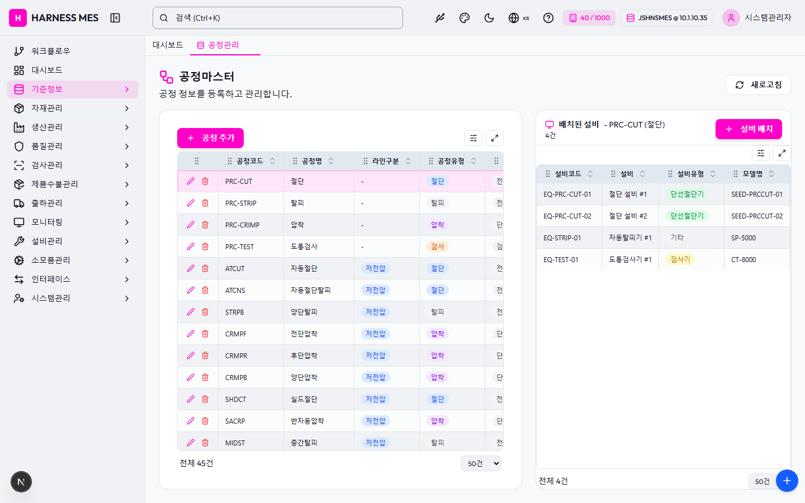

Route: /master/process
Status: PASS / HTTP 200
| 기능/버튼 | 처리 방식 | 상태 | 비고 |
|---|---|---|---|
| 화면 로드 | GET /master/process | 실행 | HTTP 200 |
| 라우트 prewarm | 직접 HTTP 확인 | 실행 | HTTP 200, 199ms |
| 초기 API 호출 | 브라우저 네트워크 수집 | 실행 | 15건 |
| 🇰🇷 | 화면 버튼 목록화 | 목록화 | 후속 메뉴별 세부 시나리오 실행 대상 |
| 시스템관리자 | 화면 버튼 목록화 | 목록화 | 후속 메뉴별 세부 시나리오 실행 대상 |
| 워크플로우 | 화면 버튼 목록화 | 목록화 | 후속 메뉴별 세부 시나리오 실행 대상 |
| 대시보드 | 화면 버튼 목록화 | 목록화 | 후속 메뉴별 세부 시나리오 실행 대상 |
| 기준정보 | 화면 버튼 목록화 | 목록화 | 후속 메뉴별 세부 시나리오 실행 대상 |
| 자재관리 | 화면 버튼 목록화 | 목록화 | 후속 메뉴별 세부 시나리오 실행 대상 |
| 생산관리 | 화면 버튼 목록화 | 목록화 | 후속 메뉴별 세부 시나리오 실행 대상 |
| 품질관리 | 화면 버튼 목록화 | 목록화 | 후속 메뉴별 세부 시나리오 실행 대상 |
| 검사관리 | 화면 버튼 목록화 | 목록화 | 후속 메뉴별 세부 시나리오 실행 대상 |
| 제품수불관리 | 화면 버튼 목록화 | 목록화 | 후속 메뉴별 세부 시나리오 실행 대상 |
| 출하관리 | 화면 버튼 목록화 | 목록화 | 후속 메뉴별 세부 시나리오 실행 대상 |
| 모니터링 | 화면 버튼 목록화 | 목록화 | 후속 메뉴별 세부 시나리오 실행 대상 |
| 설비관리 | 화면 버튼 목록화 | 목록화 | 후속 메뉴별 세부 시나리오 실행 대상 |
| 소모품관리 | 화면 버튼 목록화 | 목록화 | 후속 메뉴별 세부 시나리오 실행 대상 |
| 인터페이스 | 화면 버튼 목록화 | 목록화 | 후속 메뉴별 세부 시나리오 실행 대상 |
| 시스템관리 | 화면 버튼 목록화 | 목록화 | 후속 메뉴별 세부 시나리오 실행 대상 |
| 공정관리 | 화면 버튼 목록화 | 목록화 | 후속 메뉴별 세부 시나리오 실행 대상 |
| 새로고침 | 화면 버튼 목록화 | 목록화 | 후속 메뉴별 세부 시나리오 실행 대상 |
| 공정 추가 | 화면 버튼 목록화 | 목록화 | 후속 메뉴별 세부 시나리오 실행 대상 |
| 입력 필드 | DOM 수집 | 목록화 | 1개 |
| 선택 필드 | DOM 수집 | 목록화 | 2개 |
| 목록/그리드 | DOM 수집 | 목록화 | table 2, grid 0 |
| Method | URL | Status | OK |
|---|---|---|---|
| GET | /api/health | 200 | OK |
| GET | /api/db-info | 200 | OK |
| GET | /api/health | 200 | OK |
| GET | /api/db-info | 200 | OK |
| GET | /api/db-info | 200 | OK |
| GET | /api/auth/me | 200 | OK |
| GET | /api/system/configs/active | 200 | OK |
| GET | /api/system/comm-configs?commType=SERIAL&useYn=Y | 200 | OK |
| GET | /api/menu-categories/tree | 200 | OK |
| GET | /api/ai/page-tools/master.process | 200 | OK |
| GET | /api/master/processes?limit=5000 | 200 | OK |
| GET | /api/master/processes/equipment-counts | 200 | OK |
| GET | /api/master/com-codes/all-active | 200 | OK |
| GET | /api/equipment/equips?limit=10000&useYn=Y | 200 | OK |
| GET | /api/master/processes/PRC-CUT/equipments | 200 | OK |
requestfailed: GET https://fonts.gstatic.com/s/outfit/v15/QGYvz_MVcBeNP4NJtEtq.woff2 net::ERR_ABORTED

H HARNESS MES 🇰🇷 40 / 1000 JSHNSMES @ 10.1.10.35 시스템관리자 워크플로우 대시보드 기준정보 자재관리 생산관리 품질관리 검사관리 제품수불관리 출하관리 모니터링 설비관리 소모품관리 인터페이스 시스템관리 대시보드 공정관리 공정마스터 공정 정보를 등록하고 관리합니다. 새로고침 공정 추가 공정코드 공정명 라인구분 공정유형 공정 대분류 설비 정렬순서 사용여부 PRC-CUT 절단 - 절단 전선 4 500 N PRC-STRIP 탈피 - 탈피 전선 2 510 N PRC-CRIMP 압착 - 압착 단자 2 520 N PRC-TEST 도통검사 - 검사 검사 2 530 N ATCUT 자동절단 저전압 절단 전선 3 1010 Y ATCNS 자동절단탈피 저전압 절단 전선 2 1020 Y STRPB 양단탈피 저전압 탈피 전선 3 1030 Y CRMPF 전단압착 저전압 압착 단자 2 1040 Y CRMPR 후단압착 저전압 압착 단자 2 1050 Y CRMPB 양단압착 저전압 압착 단자 3 1060 Y SHDCT 실드절단 저전압 절단 전선 0 1070 Y SACRP 반자동압착 저전압 압착 단자 0 1090 Y MIDST 중간탈피 저전압 탈피 전선 0 1100 Y SJCRP S/JOINT압착 저전압 압착 단자 0 1110 Y WELDR 초음파융착 저전압 융착 단자 2 1120 Y TUBHT 열수축 저전압 열처리 열처리 1 1130 Y ATAPE 자동테이핑 저전압 조립 조립 0 1140 Y TWIST 트위스트 저전압 조립 전선 0 1150 Y CRINS 절압물검사 저전압 검사 검사 0 1160 Y SACMB 반제품조합 저전압 조립 조립 0 1170 Y TAPNG 테이핑 저전압 조립 조립 0 1180 Y PROTC 프로텍트체결 저전압 조립 조립 0 1200 Y STINS 구조검사 저전압 검사 검사 0 1210 Y CIINS 회로검사 저전압 검사 검사 0 1220 Y FUSIN 퓨즈삽입/토크체결 저전압 조립 조립 0 1230 Y VISIN 비전검사 저전압 검사 검사 0 1240 Y RLYIN 릴레이기능검사 저전압 검사 검사 0 1250 Y FINSH 마무리 저전압 조립 조립 0 1260 Y ABAG A/BAG제작 저전압 조립 조립 0 1900 Y CBLCT 케이블절단 고전압 절단 전선 0 2010 Y SHDRM 실드편조절단 고전압 편조제거 전선 2 2020 Y HEXCP 육각압착 고전압 압착 단자 2 2040